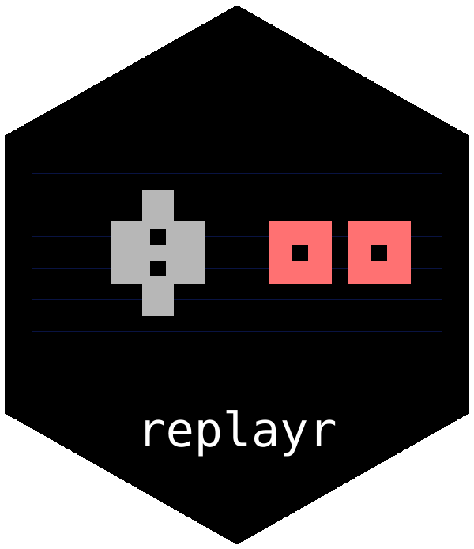

Package index
-
read_movie() - Read any supported movie file by extension
-
supported_formats() - Names of the supported movie file extensions
Per-format readers
Direct readers for each supported file format. Useful when you already know the format.
-
read_fm2() - Read an FCEUX .fm2 movie file
-
read_bk2() - Read a BizHawk .bk2 movie file
-
read_fcm() - Read a FCEU .fcm movie file
-
read_lsmv() - Read an lsnes .lsmv movie file
-
read_gmv() - Read a Gens-rerecording .gmv movie file
-
read_vbm() - Read a VBA-rerecording .vbm movie file
-
read_m64() - Read a Mupen64 .m64 movie file
-
read_smv() - Read a Snes9x-rerecording .smv movie file
-
read_pxm() - Read a PSXjin .pxm movie file
-
read_pjm() - Read a PSXjin .pjm movie file
-
read_dtm() - Read a Dolphin .dtm GameCube movie file
Inspecting parsed movies
Helpers for working with the replayr_movie S3 object returned by the readers.
-
replayr_movie - The
replayr_movieS3 class -
n_frames() - Number of frames in a parsed movie
-
n_players() - Number of players (controller ports) in a parsed movie
-
n_buttons() - Number of universal-button slots in a parsed movie
-
player() - Per-frame button presses for one player
-
press_counts() - Press counts per universal-button slot
-
universal_buttons() - Universal button mnemonics
-
universal_button_names() - Universal button friendly names
-
replayrreplayr-package - replayr: parsers for emulator movie ("input log") files